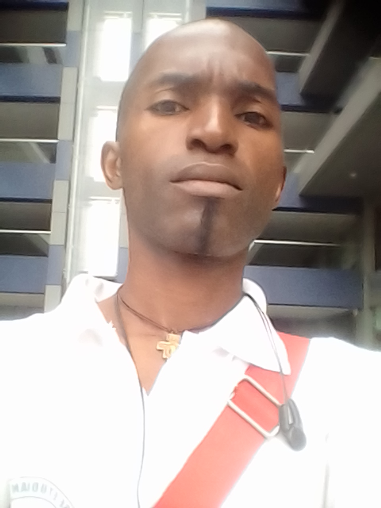

Ma photo d'identité :

2014
Présentation
NDONG EVOUNA Chyldran Pascal surnom Pequeno Le Voyageur. Né à Fougamou le 28 février 1986, obtient son Baccalauréat en 2009 au lycée Martial NTOUTOUM EMANE en Ntoum, s'inscrit au Département d'Histoire et Archéologie où il obtient sa Licence en 2014.
Il aime beaucoup les voyages. Il obtient également un certificat en Assistant Saisie Informatique en 2017 dans le cadre du projet My Train Generation (TMG) organisé par l'UNESCO et Airtel Gabon.
Son rêve est d'investir dans trois (3) domaines à savoir le numérique et l'infographie,le cinéma et l'immobilier.
Voici une liste des liens de mes réseaux sociaux
Ma chanson préférée Lord Ekomy NDONG
Barry Allen de son vrai nom Grant Gustin